Jewish Images in the Work of the Catholic Artist Józef Regula
Józef Regula, a Pole and a Catholic, tries through his work to picture, remember and understand a world he never saw himself and did not live to find.
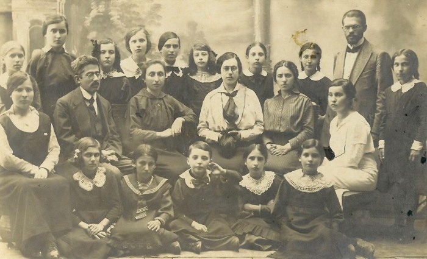
From the editor:
It was important to me to make this post as a pair to, and a counterweight to, the previous one, "The Jew with a Coin", to show a different view of the same subject and a completely different outlook. Besides superstitious Poles (and not only they), these "wooden" Jews of the Polish shtetls are often bought by American Jews, so that the figures may be some small sign of the past of their relatives, who once made up a large, living community in Poland. Some Germans buy them too. For them it is a terrible reminder of what their parents took part in directly.
Józef Regula is a Pole and a Catholic: through his work he tries to picture, remember and understand a world he never saw himself and did not live to find. He lives in a Jewish district, but there are no Jews there any more. He has heard the testimonies of eyewitnesses who saw the Jewish life seething in it and the distinctive, unrepeatable Yiddish culture that once filled the district and has now vanished completely. A whole civilisation perished in some five years. Through his art he remembers what he never knew (he was born in 1953). He did this not for sale but for himself, in an attempt to understand something important.
I advise reading this together with "THE JEW WITH A COIN".

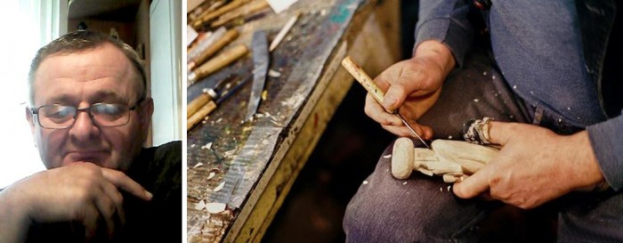
JEWISH IMAGES in the work of the Catholic Józef Regula
Translated by Veta Kalish
Several themes constantly occupy him in his work. Mostly these were religious Christian motifs, subjects from village life, the theme of labour, landscapes and a popular motif, fish. One of the central themes of his work is the life of the Jewish shtetl.
The Jewish theme in his work began with his acquaintance with the work of Isaac Singer. (In 1978 Isaac Bashevis Singer was awarded the Nobel Prize in Literature "for his impassioned narrative art which, with roots in a Polish-Jewish cultural tradition, brings universal human conditions to life".) Józef liked his books very much.
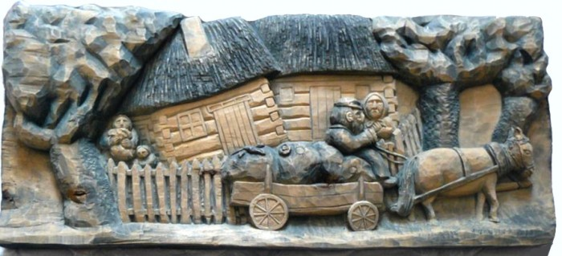
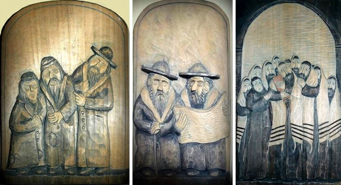
Bashevis Singer gave his work its first impulse. He showed the variety and beauty of this culture, which is spellbinding. And the artist tries to translate this attitude into sculpture. "Before, I did not know that in Hasidism prayer is also done through dance. And that is amazing. And if you read things of this kind, then you understand it and can interpret it in your work."
Unfortunately, many things disappear without leaving a trace that would be imprinted in people's memory. Very little time has passed, and what went on in Poland for hundreds of years has simply disappeared. It was here before the war began. In 1942 the Germans seized everyone. Many were shot here on this spot. Others were driven into concentration camps. Two women managed to hide, but they were soon discovered and shot opposite their house. This is known from the words of an eyewitness.
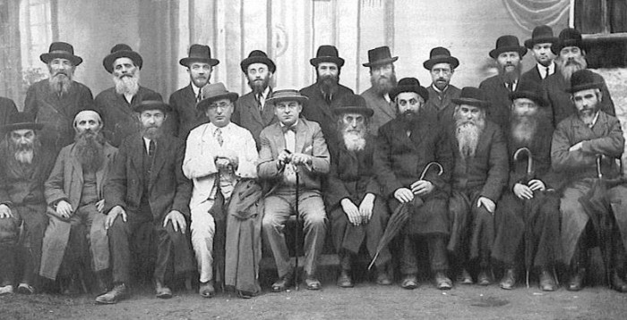
Once these Jews were at the same time Poles too. They were an inseparable part of the Polish panorama of life. The artist feels the atmosphere of a once flourishing Jewish life to be close to him. He depicts Jewish characters in their typical surroundings, stressing their customs, the richness of their tradition, their world. For him all this is extraordinarily interesting and is an inspiration that stimulates his imagination. Besides the fact that the Jewish community was an inseparable part of Poland, one more thing drew him to it: his biblical interest as a Catholic. The various feasts of the Jews, connected with the history of Israel and biblical history in general, are an inseparable part of the Holy Scriptures. He always liked history, especially the history of the Middle East. So all these things are very close to Józef.
He began to take an interest in how this culture came to Poland. All this was reflected in his sculptures. "It is not for me to judge how well I do it. I simply do it and feel it; it is something as close to me as if it were part of me. I get true pleasure from creating something that is like a continuation of myself," the artist testifies. "My work is not something copied, but born of me. What comes out of my hands is the fruit of my reflections and discoveries."
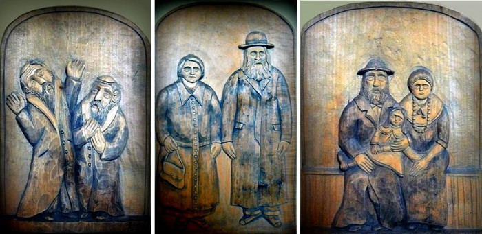
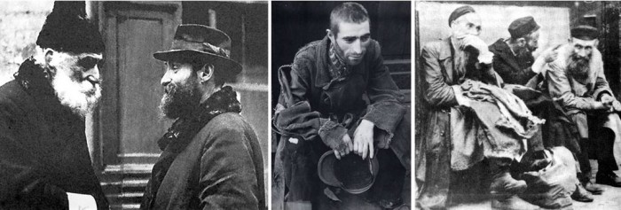
In Singer's books there are many female characters who are the main figures of his works. The men are in the synagogue, praying and studying the Talmud. But most other aspects of life belong to the woman: they care for the children, they have a thousand different duties. The husband studies the Torah all his life, while the wife does the housework and earns the daily bread.
The sculptor tries to portray the woman in his works so that she takes her own place, because in his view her role in everyday life and household is far more significant than the man's. The man devotes himself to sacred acts, to the service of the Most High, while the woman labours in the sweat of her brow.
Regula's interest in Jewish culture comes, first, from his curiosity; second, if you want to be deep in what you do, you must study what nourishes your work. "For my works to be really interesting they must be made with knowledge, so as not to touch and hurt the feelings of others out of ignorance. I would not want in any way to make something offensive to Jews, God forbid. If you are an amateur and not versed in a certain field, should you take it on at all? After all, you can hurt someone's feelings," the artist says. It matters to him to study thoroughly what Jews wore and how it really looked, so that what he makes is not a distortion of the facts and some personal fantasy.
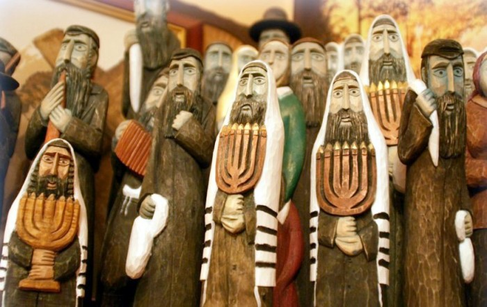
At first Józef carved his works in wood simply for himself. They were needed for self-knowledge, and he did not think of selling them. But extra money was needed to build a new house. And an acquaintance of his, Mr Leszek from Kraków, who kept a gallery, suggested he try selling them. At first he handed over a dozen of his figures. They sold successfully. Since then his affairs have gone well. The most popular characters are fiddlers, because people associate them with the film "Fiddler on the Roof". It is already a stereotype. That happens with every good film.
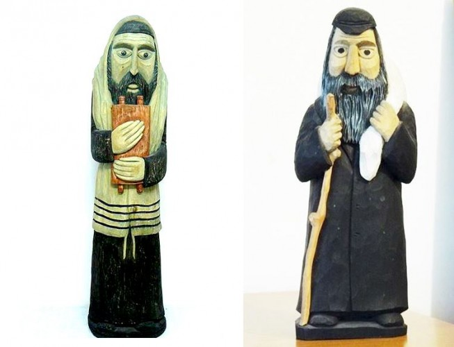
"I like to portray people from real life. How they talk, converse, bargain with one another. Someone carries water. Here is a whole family. Here is a poor beggar, worried about how to pull off some risky deal. These are very colourful, expressive characters. Rich people are not so interesting to me. They simply put on some kind of mask. But poor people are especially interesting. They have to make great efforts and take care to get themselves something to eat. That is what you can see on my shelves."
The Hasidic movement was born in Poland. Later it spread to the south-east and through the Russian Empire. Many American Jews have their family roots here. Singer's parents were also Hasidim. Their ancestors emigrated in search of work (those who survived the war were forced to flee from pogroms: editor's note). These people emigrated and began a new life in America. And now their descendants come back here to learn something about the life of their ancestors in Poland. And so they buy these figures as souvenirs. Everyone wants to know about his past. Perhaps these figures reflect the past for them? There is something original, exotic in them. Perhaps they have heard something about their past, but they cannot imagine what kind of life it was. And perhaps these figures are a kind of reminder for them.
Sometimes they are bought by young Germans who feel guilty. And some of Józef's sculptures have the quality of monuments expressing what happened not long ago, and the memories of it are still too fresh. That is why the Germans buy them.
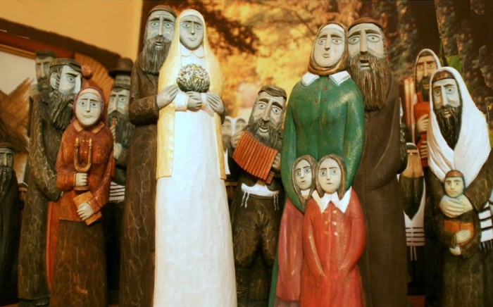
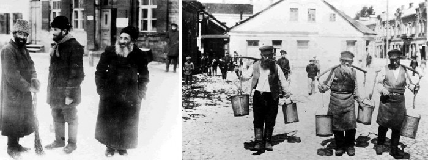
Other people buy them because figures of Jews are supposed to bring them luck. Józef Regula does not believe in these things and does not agree with this kind of superstition. Mostly these are people with Polish roots, but not only they.
"On my shelves stand Jews and Polish peasants, and they live as neighbours and in peace. All of them, the figures of Christ, the Jews, the women, the flowers, live here in complete harmony. Unfortunately, real people cannot live in peace with one another," their author remarks sadly.
Read also the article "THE JEW WITH A COIN".
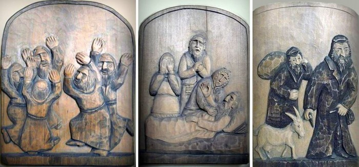
From the editor:
Instead of an afterword: I am not a great fan of this style in sculpture, but Józef Regula's work truly catches and inspires me, because its main aim is not to give pleasure but above all a spiritual search. And when, as the result of research and reflection, one receives a revelation: that is what brings true joy and delight. In my view, this is one of the most important functions of all art: to be an instrument of knowledge.
An interview with Józef Regula:
Józef Regula in his workshop:
 A Partner in God's Creativity. Alexander Men
A Partner in God's Creativity. Alexander Men The Passover Haggadah. A Historical Note
The Passover Haggadah. A Historical Note The Exodus from Egypt as Seen by James Tissot
The Exodus from Egypt as Seen by James Tissot